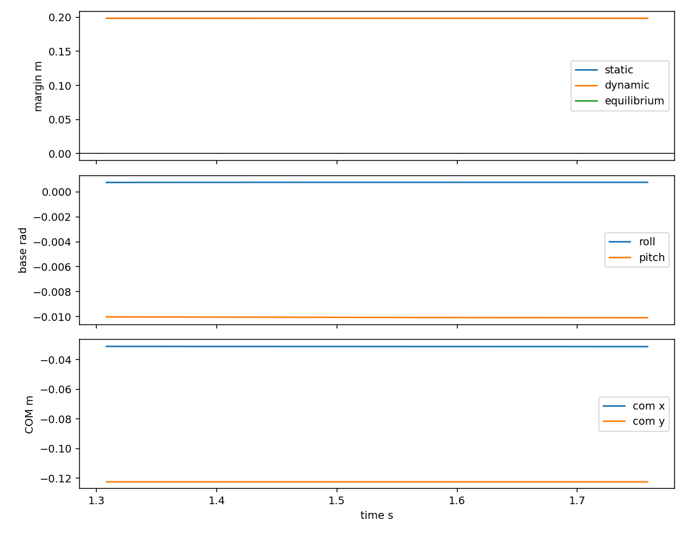
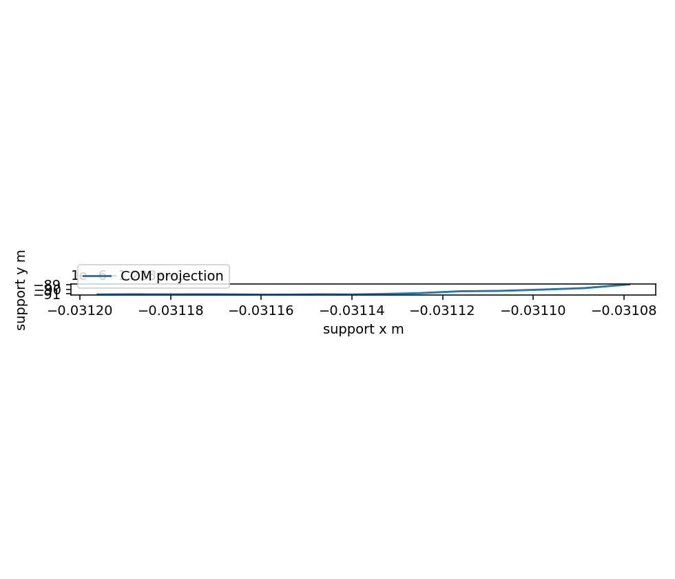
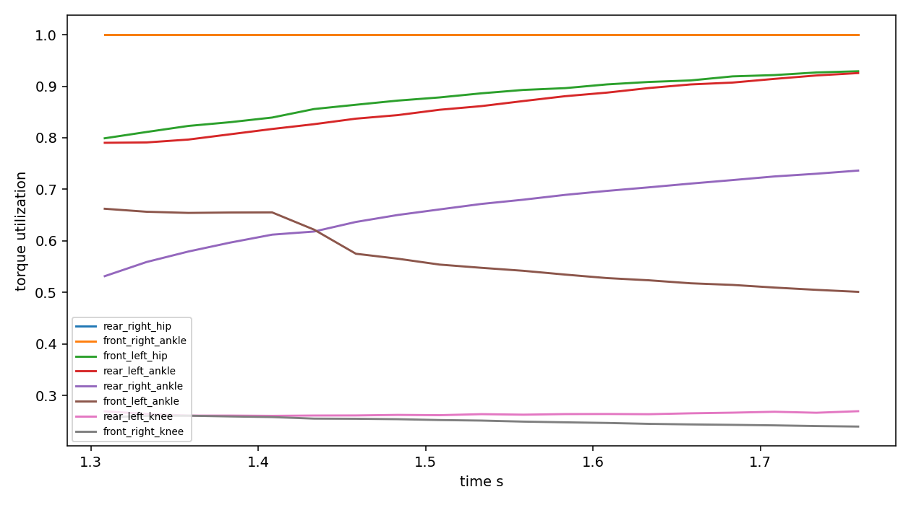
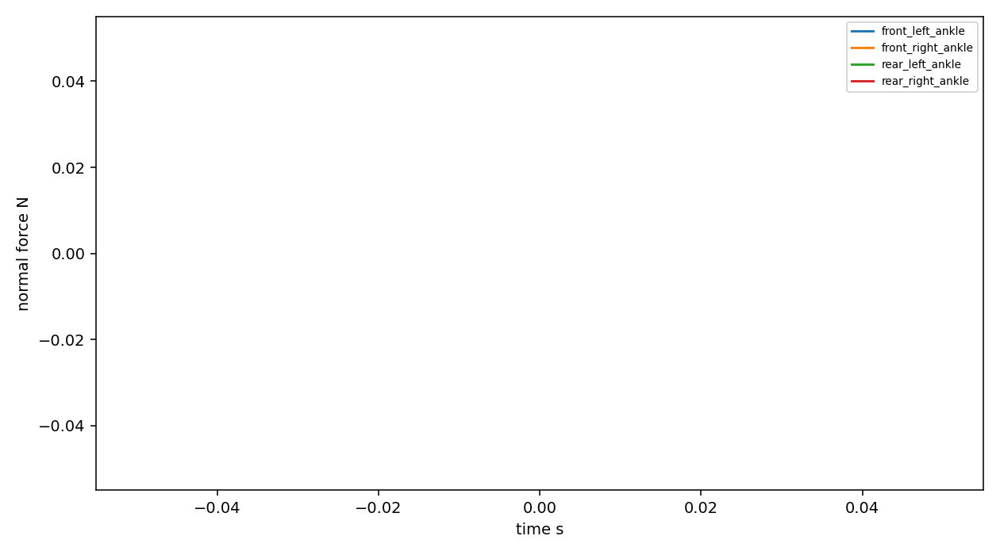

| body_com_sample_count | 247 |
|---|---|
| contact_sample_count | 76 |
| dropped_samples | 0 |
| duration_sim_s | 0.4499999999999984 |
| duration_wall_s | 8.468330383300781 |
| event_count | 10 |
| event_severity_counts | {"info": 2, "warning": 8} |
| joint_sample_count | 228 |
| max_contact_force_n | NaN |
| max_sample_overhead_ms | 155.64000001177192 |
| max_torque_utilization | 1.0 |
| mean_sample_overhead_ms | 11.99996843321347 |
| min_dynamic_margin_m | 0.19849997005495126 |
| min_equilibrium_margin_m | NaN |
| min_static_margin_m | 0.1983984028192038 |
| sample_count | 19 |
| stability_state_counts | {"safe": 19} |
| Overall Verdict | "WARN" |
|---|---|
| Stability Conclusion | "Stability metrics are usable with warnings" |
| Static Baseline | {"sample_count": 19, "duration_s": 0.4499999999999984, "com_jitter_xy_m": 0.00011950783029678405, "com_z_range_m": 4.3628521320809854e-05, "static_margin_mean_m": 0.1983995361318584, "static_margin_std_m": 3.6112203986540666e-07, "support_area_mean_m2": 0.2223080361969151, "support_area_std_m2": 3.079769425864938e-05} |
| Dynamic Consistency | {"dynamic_margin_mean_m": 0.19850802830832734, "dynamic_margin_std_m": 6.704956931797792e-06, "equilibrium_margin_mean_m": null, "equilibrium_margin_std_m": null, "max_torque_utilization": 1.0, "max_contact_normal_force_n": null, "finite_torque_rows": 228, "finite_contact_rows": 0} |
| Time | Severity | Type | Message |
|---|---|---|---|
| 0s | info | telemetry_started | Telemetry run started: 5cm worker session |
| 1.308s | warning | torque_limit_warning | rear_right_hip torque utilization exceeded threshold |
| 1.308s | warning | joint_position_limit_warning | front_left_knee is close to position limit |
| 1.308s | warning | joint_position_limit_warning | front_right_knee is close to position limit |
| 1.308s | warning | joint_position_limit_warning | rear_left_knee is close to position limit |
| 1.308s | warning | joint_position_limit_warning | rear_right_knee is close to position limit |
| 1.308s | warning | torque_limit_warning | front_right_ankle torque utilization exceeded threshold |
| 1.608s | warning | torque_limit_warning | front_left_hip torque utilization exceeded threshold |
| 1.658s | warning | torque_limit_warning | rear_left_ankle torque utilization exceeded threshold |
| 1.758s | info | telemetry_finished | worker shutdown |
| Run Directory | C:\robotics_sim\wlr_robot\height_based_obstacle_replay\runs\20260722_233743_obstacle-05cm_5cm-worker-session |
|---|---|
| Telemetry CSV | telemetry_samples.csv |
| Body COM CSV | body_com_timeseries.csv |
| Joint CSV | joint_timeseries.csv |
| Contacts CSV | contacts.csv |
| Events JSONL | events.jsonl |
| Model Audit | model_audit.json |